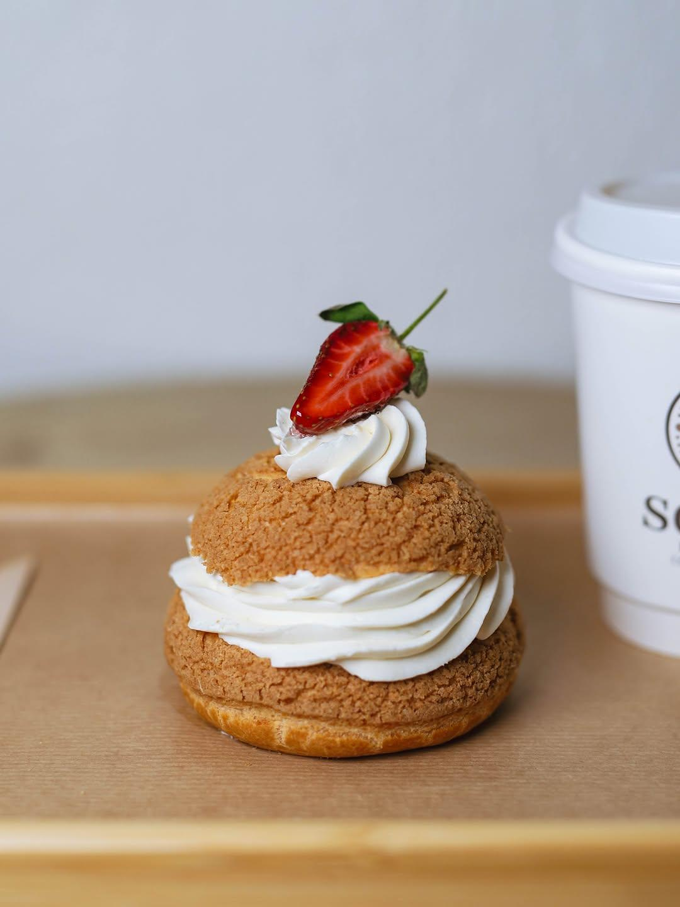
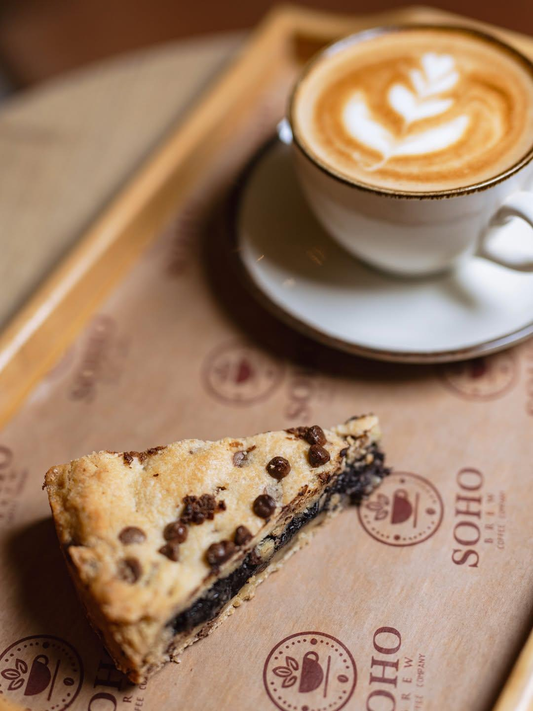

Paris Berry
Kahveyle birlikte tatlı bir ara.

SİNANOBA · BÜYÜKÇEKMECE
Günün küçük keyiflerine
Soho’da yer açın.
SELF SERVİS · 09.30–00.30

SOHO’DA ZAMAN
Doğal dokular, aydınlık bir alan.
Sinanoba’da buluşmak için bir adres.
GOOGLE YORUMLARI
“Oturum alanı geniş ve ferah.”
Mediha Köseoğlu
Google yorumunu aç ↗“Mimaroba’da sürekli gittiğim çok güzel bir kafe. Çalışanları oldukça nazik ve güleryüzlüler.”
İrem Su
Google yorumunu aç ↗Google yorumlarından kısa alıntılar. Puan ve yorum sayısı kontrol tarihindeki kaydı yansıtır.
Her gün 09.30–00.30 · Self servis
@sohobrew ↗Ziyaret öncesi güncel saatleri resmî hesabımızdan kontrol edebilirsiniz.